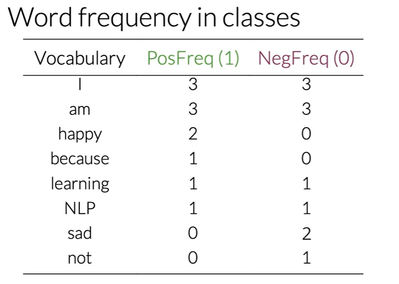
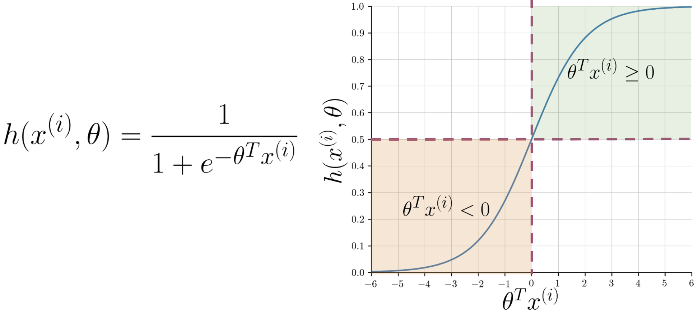

tweets = ['This dog is amazing but I prefer a corgi',
'Donald Trump hair-dresser should be in jail',
'Roses are red, the sky is blue and machine learning is not a black box']Sentiment Analysis with Logistic Regression
1 Supervised ML & Sentiment Analysis
In supervised machine learning, you usually have an input X, which goes into your prediction function to get your \hat{Y} You can then compare your prediction with the true value Y. This gives you your cost which you use to update the parameters The following image, summarizes the process.
To perform sentiment analysis on a tweet, you first have to represent the text (i.e. “I am happy because I am learning NLP”) as features, you then train your logistic regression classifier, and then you can use it to classify the text.

Note that in this case, you either classify 1, for a positive sentiment, or 0, for a negative sentiment.
2 Text Representation.
2.1 Sparse Representation.
Given a set of tweets:
A vocabulary V will be formed by all the different words available in the tweet list. Lets imagine that our vocabulary is just composed of the unique words of our first tweet. In this case we could encode the second tweet as follows:
sparse_vector = []
vocabulary = tweets[0].split(' ')
for i in tweets[2].split(' '):
if i in vocabulary:
sparse_vector.append(1)
else:
sparse_vector.append(0)The resulting vector will be [0, 0, 0, 0, 0, 1, 0, 0, 0, 0, 1, 0, 1, 0, 0] which is a sparse vector as it mostly contain 0s. It is easily seen that this is not scalable as well as not memory efficient. Basically the resulting vectors will have a size of n=|V|
2.2 Negative and Positive Frequencies.
Let’s imagine that now we have the following tweets:
tweets = ['I am happy because I am learning NLP',
'I am happy',
'I am sad, I am not learning NLP',
'I am sad']The unique vocabulary can be obtained by:
all_text = ' '.join(tweets).lower()
import string
all_tweets = all_text.translate(str.maketrans('', '', string.punctuation))
# Split the combined string into individual words
words = all_tweets.split()
# Convert the list of words into a set to get unique words
unique_words = set(words)
print(unique_words){'sad', 'nlp', 'i', 'not', 'happy', 'am', 'learning', 'because'}For this particular example of sentiment analysis, you have two classes. One class associated with positive sentiment and the other with negative sentiment. So taking your corpus, you’d have a set of two tweets that belong to the positive class, and the sets of two tweets that belong to the negative class. Let’s take the sets of positive tweets. Now, take a look at your vocabulary. To get the positive frequency in any word in your vocabulary, you will have to count the times as it appears in the positive tweets and viceversa for the negative frequency.

2.3 Feature extraction with Frequencies
Given the representation of the dictionary mentioned above. We can calculate a feature representation vector as follows:
positive_negative_dictionary = {
'vocabulary' : ['I', 'am', 'happy', 'because', 'learning', 'NLP', 'sad', 'not'],
'posfreq(1)' : [3, 3, 2, 1, 1, 1, 0, 0],
'negfreq(0)' : [3, 3, 0, 0, 1, 1, 2, 1],
}
sentence = ['I', 'am', 'sad', 'I', 'am', 'not', 'learning', 'NLP']
positions = set(
[positive_negative_dictionary['vocabulary'].index(word)
for word in sentence])
pos_freq_sum = sum(
positive_negative_dictionary['posfreq(1)'][position]
for position in positions)
neg_freq_sum = sum(
positive_negative_dictionary['negfreq(0)'][position]
for position in positions)
X_m = [1, pos_freq_sum, neg_freq_sum]
X_m[1, 8, 11]2.4 Preprocessing techniques.
Lets use now a real dataset from the NLTK library. We will be using the Twitter dataset, the sample dataset from NLTK is separated into positive and negative tweets. It contains 5000 positive tweets and 5000 negative tweets exactly. The exact match between these classes is not a coincidence. The intention is to have a balanced dataset. That does not reflect the real distributions of positive and negative classes in live Twitter streams. It is just because balanced datasets simplify the design of most computational methods that are required for sentiment analysis. However, it is better to be aware that this balance of classes is artificial.
import nltk # Python library for NLP
from nltk.corpus import twitter_samples # sample Twitter dataset from NLTK
import matplotlib.pyplot as plt # library for visualization
import random
# downloads sample twitter dataset.
nltk.download('twitter_samples')
# select the set of positive and negative tweets
all_positive_tweets = twitter_samples.strings('positive_tweets.json')
all_negative_tweets = twitter_samples.strings('negative_tweets.json')[nltk_data] Downloading package twitter_samples to
[nltk_data] /home/azureuser/nltk_data...
[nltk_data] Package twitter_samples is already up-to-date!We will now get the number of positives and negative tweets:
print(f'Number of positive tweets: {len(all_positive_tweets)}')
print(f'Number of negative tweets: {len(all_negative_tweets)}')
print(f'The type of all_positive_tweets is: {type(all_positive_tweets)}')
print(f'The type of a tweet entry is: {type(all_negative_tweets[0])}')Number of positive tweets: 5000
Number of negative tweets: 5000
The type of all_positive_tweets is: <class 'list'>
The type of a tweet entry is: <class 'str'>Before anything else, we can print a couple of tweets from the dataset to see how they look. Understanding the data is responsible for 80% of the success or failure in data science projects. We can use this time to observe aspects we’d like to consider when preprocessing our data.
Below, you will print one random positive and one random negative tweet. We have added a color mark at the beginning of the string to further distinguish the two. (Warning: This is taken from a public dataset of real tweets and a very small portion has explicit content.)
# print positive in greeen
print('\033[92m' + all_positive_tweets[random.randint(0,5000)])
# print negative in red
print('\033[91m' + all_negative_tweets[random.randint(0,5000)])@sltuan96 there will be next event on September :D
My last day in Indiana :((((Data preprocessing is one of the critical steps in any machine learning project. It includes cleaning and formatting the data before feeding into a machine learning algorithm. For NLP, the preprocessing steps are comprised of the following tasks:
- Tokenizing the string
- Lowercasing
- Removing stop words and punctuation
- Stemming
All of this techniques allow us to compress even more the dimension of the vocabulary, achieving faster training due to lower feature vector size.
2.4.1 HyperLink Cleaning
import re # library for regular expression operations
import string # for string operations
from nltk.corpus import stopwords # module for stop words that come with NLTK
from nltk.stem import PorterStemmer # module for stemming
from nltk.tokenize import TweetTokenizer # module for tokenizing strings
nltk.download('stopwords')
# Our selected sample. Complex enough to exemplify each step
tweet = all_positive_tweets[2277]
print(tweet)My beautiful sunflowers on a sunny Friday morning off :) #sunflowers #favourites #happy #Friday off… https://t.co/3tfYom0N1i[nltk_data] Downloading package stopwords to
[nltk_data] /home/azureuser/nltk_data...
[nltk_data] Package stopwords is already up-to-date!Since we have a Twitter dataset, we’d like to remove some substrings commonly used on the platform like the hashtag, retweet marks, and hyperlinks. We’ll use the re library to perform regular expression operations on our tweet. We’ll define our search pattern and use the sub() method to remove matches by substituting with an empty character (i.e. ’’)
print('\033[92m' + tweet)
print('\033[94m')
# remove old style retweet text "RT"
tweet2 = re.sub(r'^RT[\s]+', '', tweet)
# remove hyperlinks
tweet2 = re.sub(r'https?://[^\s\n\r]+', '', tweet2)
# remove hashtags
# only removing the hash # sign from the word
tweet2 = re.sub(r'#', '', tweet2)
print(tweet2)My beautiful sunflowers on a sunny Friday morning off :) #sunflowers #favourites #happy #Friday off… https://t.co/3tfYom0N1i
My beautiful sunflowers on a sunny Friday morning off :) sunflowers favourites happy Friday off… 2.4.2 Tokenization
print()
print('\033[92m' + tweet2)
print('\033[94m')
# instantiate tokenizer class
tokenizer = TweetTokenizer(preserve_case=False, strip_handles=True,
reduce_len=True)
# tokenize tweets
tweet_tokens = tokenizer.tokenize(tweet2)
print()
print('Tokenized string:')
print(tweet_tokens)
My beautiful sunflowers on a sunny Friday morning off :) sunflowers favourites happy Friday off…
Tokenized string:
['my', 'beautiful', 'sunflowers', 'on', 'a', 'sunny', 'friday', 'morning', 'off', ':)', 'sunflowers', 'favourites', 'happy', 'friday', 'off', '…']2.4.3 Punctuation and Stopwords
The next step is to remove stop words and punctuation. Stop words are words that don’t add significant meaning to the text. You’ll see the list provided by NLTK when you run the cells below.
#Import the english stop words list from NLTK
#Import the english stop words list from NLTK
stopwords_english = stopwords.words('english')
print('Stop words\n')
print(stopwords_english)
print('\nPunctuation\n')
print(string.punctuation)Stop words
['i', 'me', 'my', 'myself', 'we', 'our', 'ours', 'ourselves', 'you', "you're", "you've", "you'll", "you'd", 'your', 'yours', 'yourself', 'yourselves', 'he', 'him', 'his', 'himself', 'she', "she's", 'her', 'hers', 'herself', 'it', "it's", 'its', 'itself', 'they', 'them', 'their', 'theirs', 'themselves', 'what', 'which', 'who', 'whom', 'this', 'that', "that'll", 'these', 'those', 'am', 'is', 'are', 'was', 'were', 'be', 'been', 'being', 'have', 'has', 'had', 'having', 'do', 'does', 'did', 'doing', 'a', 'an', 'the', 'and', 'but', 'if', 'or', 'because', 'as', 'until', 'while', 'of', 'at', 'by', 'for', 'with', 'about', 'against', 'between', 'into', 'through', 'during', 'before', 'after', 'above', 'below', 'to', 'from', 'up', 'down', 'in', 'out', 'on', 'off', 'over', 'under', 'again', 'further', 'then', 'once', 'here', 'there', 'when', 'where', 'why', 'how', 'all', 'any', 'both', 'each', 'few', 'more', 'most', 'other', 'some', 'such', 'no', 'nor', 'not', 'only', 'own', 'same', 'so', 'than', 'too', 'very', 's', 't', 'can', 'will', 'just', 'don', "don't", 'should', "should've", 'now', 'd', 'll', 'm', 'o', 're', 've', 'y', 'ain', 'aren', "aren't", 'couldn', "couldn't", 'didn', "didn't", 'doesn', "doesn't", 'hadn', "hadn't", 'hasn', "hasn't", 'haven', "haven't", 'isn', "isn't", 'ma', 'mightn', "mightn't", 'mustn', "mustn't", 'needn', "needn't", 'shan', "shan't", 'shouldn', "shouldn't", 'wasn', "wasn't", 'weren', "weren't", 'won', "won't", 'wouldn', "wouldn't"]
Punctuation
!"#$%&'()*+,-./:;<=>?@[\]^_`{|}~We can see that the stop words list above contains some words that could be important in some contexts. These could be words like i, not, between, because, won, against. You might need to customize the stop words list for some applications. For our exercise, we will use the entire list.
For the punctuation, we saw earlier that certain groupings like ‘:)’ and ‘…’ should be retained when dealing with tweets because they are used to express emotions. In other contexts, like medical analysis, these should also be removed.
Now we clean the tokenized tweet:
print()
print('\033[92m')
print(tweet_tokens)
print('\033[94m')
tweets_clean = []
for word in tweet_tokens: # Go through every word in your tokens list
if (word not in stopwords_english and # remove stopwords
word not in string.punctuation): # remove punctuation
tweets_clean.append(word)
print('removed stop words and punctuation:')
print(tweets_clean)
['my', 'beautiful', 'sunflowers', 'on', 'a', 'sunny', 'friday', 'morning', 'off', ':)', 'sunflowers', 'favourites', 'happy', 'friday', 'off', '…']
removed stop words and punctuation:
['beautiful', 'sunflowers', 'sunny', 'friday', 'morning', ':)', 'sunflowers', 'favourites', 'happy', 'friday', '…']2.4.4 Stemming and lowercasing
Stemming is the process of converting a word to its most general form, or stem. This helps in reducing the size of our vocabulary.
Consider the words:
- learn
- learning
- learned
- learnt
All these words are stemmed from its common root learn. However, in some cases, the stemming process produces words that are not correct spellings of the root word. For example, happi and sunni. That’s because it chooses the most common stem for related words. For example, we can look at the set of words that comprises the different forms of happy:
- happy
- happiness
- happier
We can see that the prefix happi is more commonly used. We cannot choose happ because it is the stem of unrelated words like happen.
NLTK has different modules for stemming and we will be using the PorterStemmer module which uses the Porter Stemming Algorithm. Let’s see how we can use it in the cell below.
print()
print('\033[92m')
print(tweets_clean)
print('\033[94m')
# Instantiate stemming class
stemmer = PorterStemmer()
# Create an empty list to store the stems
tweets_stem = []
for word in tweets_clean:
stem_word = stemmer.stem(word) # stemming word
tweets_stem.append(stem_word) # append to the list
print('stemmed words:')
print(tweets_stem)
['beautiful', 'sunflowers', 'sunny', 'friday', 'morning', ':)', 'sunflowers', 'favourites', 'happy', 'friday', '…']
stemmed words:
['beauti', 'sunflow', 'sunni', 'friday', 'morn', ':)', 'sunflow', 'favourit', 'happi', 'friday', '…']2.4.5 Lemmatization
Another popular library to handle text processing is SpaCy. SpaCy does not have built-in support for stemming but if focuses more in Lemmatization (which is a more sophisticated approach to reduce words to their base form).
Lemmatization (or less commonly lemmatisation) in linguistics is the process of grouping together the inflected forms of a word so they can be analysed as a single item, identified by the word’s lemma, or dictionary form.[1]
In computational linguistics, lemmatization is the algorithmic process of determining the lemma of a word based on its intended meaning. Unlike stemming, lemmatization depends on correctly identifying the intended part of speech and meaning of a word in a sentence, as well as within the larger context surrounding that sentence, such as neighbouring sentences or even an entire document. As a result, developing efficient lemmatization algorithms is an open area of research.
An example of using spacy can be found below. First we download the spaCy english model:
pip install spacy
python -m spacy download en_core_web_smThen we run our pipeline:
import spacy
import random
import matplotlib.pyplot as plt
# Load spaCy model
nlp = spacy.load('en_core_web_sm')
# Example tweet
tweet = "RT @username: Example tweet with URL https://t.co/example and #hashtag"
# Preprocessing with spaCy
doc = nlp(tweet)
# Tokenization and processing
# Remove URLs, handles, hashtags, stop words, and punctuation. Then, lemmatize the tokens.
tokens = [
token.lemma_ for token in doc
if not token.is_stop
and not token.is_punct
and not token.like_url
and not token.is_space
and token.text[0] != '#'
and token.text[0] != '@'
]
print("Processed tweet tokens:", tokens)/anaconda/envs/llm_research/lib/python3.10/site-packages/torch/cuda/__init__.py:628: UserWarning:
Can't initialize NVML
Processed tweet tokens: ['RT', 'example', 'tweet', 'url', 'hashtag']The primary changes with spaCy involve how you handle text processing:
- spaCy’s Tokenizer handles tokenization more comprehensively, so you don’t need to manually remove RT, URLs, or use regex for hashtags.
- Lemmatization is used instead of stemming. spaCy provides the .lemma_ attribute for tokens.
- Stop word removal is streamlined with token.is_stop.
- Punctuation removal is achieved with token.is_punct.
- spaCy does not require separate download commands for stop words or tokenizers as NLTK does.
2.5 Summing all together
Over all , you start with a given text, you perform preprocessing, then you do feature extraction to convert text into numerical representation as follows:

The feature vector X becomes of dimension (m,3) as follows:

3 Logistic Regression Overview
Logistic regression makes use of the sigmoid function which outputs a probability between 0 and 1. The sigmoid function with some weight parameter \theta and some input x^(i) is defined as follows:

Note that as \theta x^(i) gets closer and closer to -\infty the denominator of the sigmoid function gets larger and larger and as a result, the sigmoid gets closer to 0. On the other hand, as \theta x^(i) to +\infty the denominator of the sigmoid function gets closer to 1 and as a result the sigmoid also gets closer to 1.
Now given a tweet, you can transform it into a vector and run it through your sigmoid function to get a prediction as follows:

3.1 Training logistic regression.